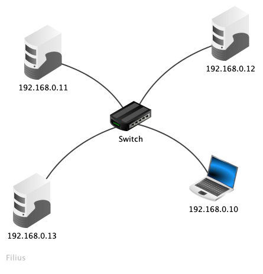
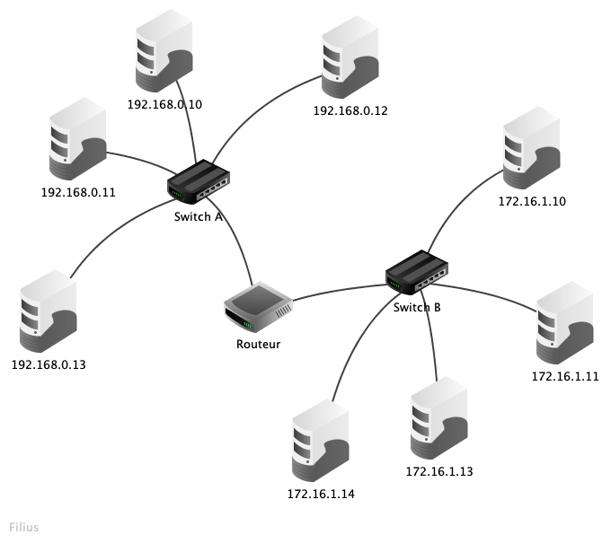

L’objectif de cette séance est de mettre en pratique les concepts rappelés lors des séances précédentes et d’introduire la notion de routage.
-
Télécharger le logiciel Filius
-
Attention : Choisir la langue lors de la première ouverture du logiciel. En cas d’erreur, supprimer le dossier
.filiuscontenant les paramètres de langues se trouvant dansC:\Users\nom d’utilisateur sur le réseau\AppData\Local\.filius(sous windows).
Construction d’un réseau local
-
En
mode conception, créer le réseau local suivant :  -
Configurer chaque ordinateur :
Mode conception$\longrightarrow$Clic droitsur l’ordinateur $\longrightarrow$Configurer. -
Sélectionner « Utiliser l’adresse IP comme nom ».
-
Ralentir les animations de façon à pouvoir visualiser le chemin des segments : ramener le curseur placé juste à droite du bouton
Simulationà 10 ou 0 %. -
Sur l’ordinateur portable installer les outils en ligne de commande :
Mode simulation$\longrightarrow$Clic gauche$\longrightarrow$Installation des logiciels$\longrightarrow$Ligne de commande$\longrightarrow$Appliquer les modifications. -
À quoi correspond la table
arp?
Réponse
La table arp donne la correspondance entre les adresses MAC, seules utilisées sur un réseau local, et les adresses IP, définies par les administrateurs réseau.
- Lancer la commande
arp -aet examiner son retour. Que nous apprend-elle ?
Réponse
| Adresse IP | Adresse MAC |
|---|---|
| 255.255.255.255 | FF:FF:FF:FF:FF:FF |
- Lancer la commande
ping 192.168.0.11. Que permet de visualiser cette commande ?
Réponse
La commande ping permet de tester si une liaison réseau vers une machine que l’on sait allumée et fonctionnelle existe ou pas. Des paquets sont envoyés vers cette dernière ; elle les retourne alors tels quels (echo).
- Décrire la circulation des segments observable lors de la simulation.
Réponse
- Dans un premier temps tous les cables s’allument, ce qui témoigne d’un mécanisme de diffusion.
- Par la suite, seuls les cables reliant les deux machines qui dialoguent au switch s’allument. Le switch (commutateur) permet un dialogue direct entre ces machines.
- Lancer à nouveau la commande
arp -a. Quelle information supplémentaire la tablearpcontient-elle ?
Réponse
| Adresse IP | Adresse MAC |
|---|---|
| 255.255.255.255 | FF:FF:FF:FF:FF:FF |
| 192.168.0.11 | 0C:84:62:DD:1B:C4 |
- Remarque.
- Vous n’obtiendrez pas forcément les mêmes entrées lors de votre simulation.
-
Visualiser l’historique du traffic :
Clic droitsur l’ordinateur $\longrightarrow$Afficher les échanges de données. -
Pourquoi voit-on, dans certains messages, une adresse MAC valant FF:FF:FF:FF:FF:FF ?
Réponse
Il s’agit de l’adresse de diffusion.
- À quel niveau du modèle OSI le protocole
arpintervient-il ?
Réponse
Niveau 3, couche réseau. Ce protocole fait cependant le lien entre les informations de la couche 2 et celles de la couche 3. On dit parfois que ce protocole appartient à la couche 2,5.
- À quel niveau du modèle OSI intervient la commande
ping?
Réponse
Le protocole ICMP intervient au niveau 3, couche réseau.
- Examiner la table SAT du switch :
Clic gauchesur le switch. Que nous apprend cette table ?
Réponse
Cette table indique sur quel port se trouve chaque ordinateur (repéré par son adresse MAC).
- Expliquer pourquoi on dit qu’« un commutateur (switch) limite le domaine de collision mais pas le domaine de diffusion ».
Réponse
- Au niveau de la couche 2 du modèle OSI, aucune notion de connexion entre deux machines n’existe ; les segments sont diffusés sur tout le réseau et sont reçus aussi bien par la machine destinataire (qui traite alors l’information) que par celles qui ne le sont pas.
- Le processus de découverte de l’adresse MAC de la machine destinataire se fait forcément par diffusion. Un commutateur doit permettre ce mécanisme.
- Par la suite, le switch s’assure que les segments destinés à une machine soient directement dirigés vers le port qui conduit à la machine destinataire ; il évite donc une diffusion à tout le réseau et les éventuelles collisions entre segments qui pourraient intervenir.
- Reprendre les manipulations précédentes en effectuant la commande
pingvers une nouvelle machine et en examinant le remplissage des tablesarpetSAT.
Communication entre deux réseaux
- Créer le réseau local suivant :

Les masques de sous-réseau sont :
- 255.255.255.0 pour le sous-réseau connecté au switch A ;
- 255.255.0.0 pour le sous-réseau connecté au switch B.
- Pour pouvoir communiquer sur un même réseau, deux hôtes doivent avoir la même adresse réseau (IP).
- Pour pouvoir communiquer entre deux réseaux différents, il faut passer par une passerelle, qui elle possède plusieurs cartes réseau, et donc plusieurs adresses IP.
- Lancer la commande
pingdepuis un ordinateur du sous-réseau A vers un ordinateur du sous-réseau B. Observer et justifier le résultat.
Réponse
Il est impossible d’atteindre un ordinateur du sous-réseau B depuis un ordinateur du sous-réseau A car ils n’appartiennent pas au même réseau et parce que le routeur n’a pas encore été configuré.
- Configurer le routeur afin qu’il route les paquets entre les deux sous-réseaux et tenter à nouveau l’expérience de la question 18. La communication est-elle bien établie ?
Réponse
La communication est toujours impossible.
- Afin de comprendre pourquoi la communication entre les machines des deux sous-réseaux est toujours impossible, sur l’ordinateur du sous-réseau A, lancer la commande
route. Examiner le résultat et identifier le problème.
Réponse
L’ordinateur ne connaît pas la route vers le sous-réseau B.
- Configurer les ordinateurs afin que la communication entre les sous-réseaux soit possible.
Réponse
Définir la passerelle par défaut.
-
Lancer à nouveau la commande
pinget examiner le résultat. -
Examiner la table
arpde l’ordinateur du sous-réseau A qui vient de communiquer avec l’ordinateur du sous-réseau B. Existe-t-il une entrée pour l’ordinateur du sous-réseau B ? Quelle est l’entrée qui existe ?
Réponse
Il n’existe aucune entrée pour l’ordinateur du sous-réseau B mais une entrée pour l’interface du routeur appartenant au sous-réseau A.
- Lancer la commande
traceroutevers l’ordinateur du sous-réseau B. À quoi correspond le retour de cette commande ?
Réponse
traceroute donne le chemin suivi par les paquets.
Réseaux étendus
-
Lancer la commande
traceroutedepuis l’ordinateur M14 vers l’ordinateur M9. Noter la route empruntée par les paquets. -
Afin de simuler une panne, supprimer le câble réseau qui relie le routeur F au routeur E et lancer à nouveau la commande
traceroute. Les paquets issus de M14 parviennent-ils toujours en M9 ?
- Remarque.
- Cela peut ne pas fonctionner du premier coup, car la mise à jour des tables de routage n’est pas immédiate. Pour remédier à cela, faire un
pingentre M14 et M9, si cela ne fonctionne pas (timeout), attendre quelques secondes et recommencer.
- Ouvrir les tables de routage de tous les routeurs qui sont intervenus dans la communication et expliquer le fonctionnement de ces tables.